MAC Holiday 2011: Ideas para Navidad
Thu, 24 Nov 2011 10:49:51 +0000
A un mes de la Navidad, ya podemos ver cómo todas las firmas presentan sus sets especiales para estas fiestas. Como cada año, MAC presenta su colección Holiday donde se encuentran numerosos packs de ojos, labios, uñas y brochas, dentro de un diseño original que lo hace perfecto para regalar. También es una oportunidad para [...]
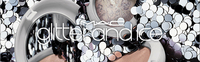
A un mes de la Navidad, ya podemos ver cómo todas las firmas presentan sus sets especiales para estas fiestas. Como cada año, MAC presenta su colección Holiday donde se encuentran numerosos packs de ojos, labios, uñas y brochas, dentro de un diseño original que lo hace perfecto para regalar. También es una oportunidad para conseguir varios productos a mejor precio.
Estos productos pueden encontrarse ya a la venta en los stands de MAC.
Dentro de esta extensa colección podemos encontrar varias líneas:
Glitter & Ice: Colección de colorido
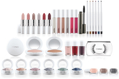
Ice Parade: paletas, sets de brochas, neceseres y estuches de labios y ojos
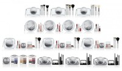
Dazzlesphere!: sets de pigmentos, lacas de uñas y brillos de labios
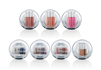
Viva Glam: Set con los dos labiales de Lady Gaga (Viva Glam Gaga I y II), adorno de árbol con forma de oso y una minitalla del gloss Viva Glam I
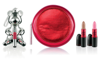
Kids Helping Kids: Tarjetas navideñas dibujadas por niños afectados por el SIDA/VIH. Todos los beneficios se destinan el Fondo de la Lucha contra el SIDA/VIH de MAC.
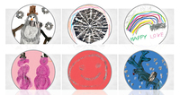
Dazzlesphere! Petite Nail Lacquer ornament & Iced Delights Lip Bag (Wintercool)
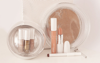
El primer set es un conjunto de cuatro lacas de uñas en tamaño mini. Vienen en un envase circular que imita una bola de Navidad. El blanco irisado también funciona muy bien como topcoat.
39€
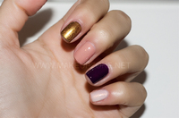
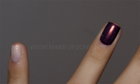
El segundo set consta de tres productos para los labios: Labial Creme D’ Nude, perfilador de labios Stripdown y gloss Cremesheen en el tono Fashion Whim. Los tres tonos se conjuntan a la perfección y el resultado es muy bonito.
44€
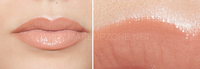
Este set puede encontrarse en otros tonos, también hay otros sets que llevan labial, gloss y una mini laca de uñas. Lo podéis ver todo aquí.
¿Os habéis hecho con algo de esta colección? ¿Qué os parece? A mi los sets me parecen más originales que los de otras Navidades! Y me parecen ideales como regalo.
Premios Bitácoras 2011 y más
Sat, 12 Nov 2011 20:54:54 +0000
¡Buenas! Ya tranquila en casa después de un fin de semana corto pero muy intenso, quería contaros un poco cómo fue la gala de los Premios Bitácoras en Madrid. El jurado me nombró ganadora en la categoría de Mejor Blog de Belleza y Moda, ¡aún trato de digerirlo! Todavía más después de conocer los datos [...]
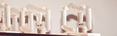
¡Buenas! Ya tranquila en casa después de un fin de semana corto pero muy intenso, quería contaros un poco cómo fue la gala de los Premios Bitácoras en Madrid. El jurado me nombró ganadora en la categoría de Mejor Blog de Belleza y Moda, ¡aún trato de digerirlo! Todavía más después de conocer los datos de participación, y es que a lo largo de las clasificaciones, participaron 18.320 blogs, con un total de 132.714 votos. Resultar ganadora entre esas cifras es cuanto menos increíble, sobre todo porque voluntariamente todos vosotros, quienes me seguís, me pusisteis en esa lista con vuestros votos y no puedo dejar de daros las gracias.
Era finalista junto a Aishawari e Isasaweis, que lamentablemente ninguna de las dos pudieron asistir. Me hizo especialmente ilusión estar nominada junto a Aishawari, poder compartir esta experiencia con una amiga ha sido genial, y como dije en la gala, lo merece igual o más que yo.
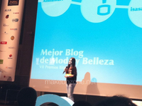
Estaba muy nerviosa, es el primer premio que obtengo con MakeUpZone. Teniendo en cuenta lo jóven que es este proyecto (poco más de dos años), es un honor recibir un reconocimiento así. Mi web no es mejor por haber ganado este premio, y tampoco hubiera sido peor si no lo hubiera ganado. Para mi, estar entre las tres finalistas, entre unos 19.000 blogs que participaron, y siendo el primer año que se incluía la categoría de belleza y moda, es algo que nunca hubiera imaginado y con lo que yo estoy más que agradecida.
La gala estuvo genial, tuvo lugar en La Casa Encendida de Madrid, presentada por BlogOff, que la hizo muy amena y divertida. Si os interesa podéis ver el resto de ganadores en este enlace.
Podéis ver la gala íntegra en este vídeo. Yo salgo más o menos a los 30 minutos, aunque os recomiendo verla entera, estuvo muy divertida. No os riáis de mi, que parezco un poco lela :P ¡Pero es que estaba muerta de los nervios!
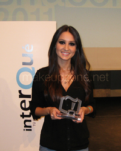
Así de contenta me fui yo :)
¡Bueno! Y pude hablar un ratito y felicitar a Alma, de Objetivo Cupcake, por su maravilloso blog y que además se llevó el segundo premio en la categoría de mejor blog gastronómico, aunque para mi era la ganadora, hace un gran trabajo y gracias a ella me he aficionado al mundo de la repostería y ya no soy tan torpe ¡Es súper maja y simpática! :) Si no conocéis su blog, os lo recomiendo totalmente, os va a encantar.
Esto ha sido otro motivo más para seguir adelante con esta página, que cada día me da más alegrías, seguir mejorando y hacerlo lo mejor que sé, y quedarme con las cosas positivas, que son muchísimas, y por lo que al fin y al cabo estoy aquí.
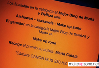
Y por supuesto, estando en Madrid, había que pasar por MAC Pro! En esta ocasión fui a acompañar a una amiga y no compré nada, pero pude ver la nueva tienda MAC Pro que han abierto hace nada en Fuencarral, un par de números por encima de la de siempre.
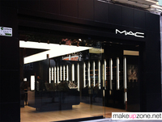
¡Es una pasada! Es como la MAC Pro de Miami. En las fotos se ve más pequeña de lo que es en realidad, pero es muy luminosa y grande, me encantó. Además vi más productos Pro, que no había visto en la otra. Aún me sorprendo de no haber pecado con nada.
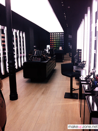
Quería dar las gracias a mis amigas Shery - TheBeautyCodes, Alicia - Ali75 y María – MariaMakeup por acompañarme a la gala de los premios, que estaba de los nervios y con ellas me reí un montón! :) Y a todas las que por Twitter y Facebook me fuisteis acompañando antes, durante y después, fue como teneros al lado :)
¡Ah! Y para las próximas semanas os tengo preparados un sorteo y una novedad muy interesante de la que por ahora no os puedo decir nada, ¡pero os va a encantar!
De nuevo MIL gracias :)
Experimento: ¿Cómo de grasas son tus bases?
Sat, 29 Oct 2011 17:43:27 +0000
¡Buenos días! Hoy quiero compartir con vosotras un “experimento” que me he animado a hacer tras verlo en la web de Raisa. Me ha parecido muy interesante y se puede hacer en casa rápidamente. Con este método vamos a saber qué bases aportan más grasa de forma orientativa. Es especialmente interesante para las que tengáis [...]
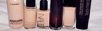
¡Buenos días! Hoy quiero compartir con vosotras un “experimento” que me he animado a hacer tras verlo en la web de Raisa. Me ha parecido muy interesante y se puede hacer en casa rápidamente. Con este método vamos a saber qué bases aportan más grasa de forma orientativa. Es especialmente interesante para las que tengáis problemas de brillos, ya que sabréis qué bases os los podrían aumentar más o menos. Es muy curioso y os recomiendo que lo hagáis, yo me he sorprendido con algunas bases.
Quiero dejar claro que es totalmente orientativo y que la base no tiene por qué actuar igual sobre la piel.
El experimento consiste en depositar una pequeña cantidad de base de maquillaje sobre un papel absorbente (los que utilizamos para retirar el exceso de grasa), y observar la cantidad de emolientes que éstas van expulsando durante el paso de las horas. Yo he utilizado las láminas antibrillos de Deliplus, pero cualquier marca sirve. Debe ser este tipo de papel porque sólo absorben la grasa. El papel normal también absorbe el agua y esta prueba es para hacernos una idea de los aceites que contienen las bases.
He elegido las bases que más utilizo para uso personal:
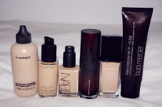
MAC F&B | MAC SFF | NARS Sheer Glow | KA The Liquid Airbrush | Chanel Vitalumiere | LM Tinted Moisturizer Oil Free
Unos 20 minutos después
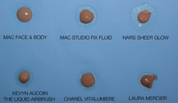
El papel empieza a absorber los emolientes de las bases. La Face&Body de momento no ha manchado el papel, mientras que la Sheer Glow parece ser la más grasa seguida de la Studio Fix Fluid y la Liquid Airbrush. La Vitalumiere y la crema con color de Laura Mercier parecen comportarse más o menos igual.
3 horas después
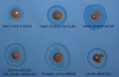
Pasadas tres horas la cosa cambia un poco. La Face & Body empieza a expulsar un poco de aceite pero es mínimo. La Vitalumiere y la Liquid Airbrush son claramente las más grasas, si os fijáis el papel está más empapado que en la Sheer Glow, en la cual el cerco es más grande pero no hay tanta cantidad de aceite. La Studio Fix Fluid y la Tinted Moisturizer de Laura Mercier tienen un aspecto prácticamente igual.
8 horas después
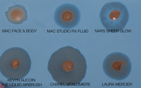
Ugh!
Después de 8 horas, lo que sería una jornada completa de trabajo, La Face & Body sigue ganando como la menos grasa seguida de la Sheer Glow, que empezó pareciendo más grasa pero sin embargo al cabo de las 4 horas se mantiene bastante bien, el papel si os fijáis ni de lejos está tan empapado como con las otras bases. La Studio Fix Fluid está más o menos igualada con la Tinted Moisturizer de Laura Mercier. Como podéis ver la Vitalumiere y la Liquid Airbrush son las más grasas, ganando la Vitalumiere con diferencia. Algo que también he observado es que la Face & Body se mantiene intacta, a diferencia de las otras bases, donde se puede apreciar que la fórmula se ha separado ligeramente.
La foto de después de 12 horas creo que no la queréis ver, jaja. Pero os diré que es una prueba de lo malo que es estar maquillada tantas horas, lo ideal es que no pase de 8, y por supuesto, desmaquillarse muy bien.
Observaciones:
La Face & Body de MAC es la menos oleosa de todas. Lo que me lleva a deducir que el aspecto jugoso que aporta y que se suele confundir con grasa, no es más que el agua que contiene, porque si hacéis el mismo experimento en un papel normal, veréis que sale más cerco pero en ese caso sería agua y no aceite (recordad que estos papelitos sólo absorben el aceite). La Sheer Glow se mantiene muy bien desde las 3 horas, es de las que menos aceite ha segregado después de la Face & Body.
Con esto tampoco quiero decir que la F&B sea le mejor base de todas, simplemente es la menos oleosa, pero ya sabéis que su textura es acuosa y su acabado es satinado, es una base que aguanta muy bien las horas y el clima, pero NO tiene por qué gustaros su acabado o su cobertura.
La Vitalumiere es la más grasa, seguida de la Liquid Airbrush. Lo de la Vitalmiere no ha sido una sorpresa, ya que esta base está indicada para pieles normales tirando a secas, que sí necesitan ese extra de hidratación, pero como podéis observar no sería la mejor amiga de una piel grasa. Sin embargo la Sheer Glow no ha empapado tanto el papel, por lo que se podría considerar que también es apta para pieles mixtas, pero no muy grasas.La Studio Fix Fluid y la Tinted Moisturizer de Laura Mercier están dentro de la normalidad, la crema de LM parece algo más grasa.
Me ha resultado curioso este experimento porque lo que observo en el papel coincide con la experiencia que había tenido con ellas en mi piel. La Face&Body me dura todo el día perfecta y resiste al agua y al sudor, más que ninguna otra base. En todo momento hablando de mi tipo de piel, por supuesto. El resto de bases me funciona bien (especialmente la Sheer Glow), pero tengo que retocarlas al menos una vez en una jornada completa, dos dependiendo del clima. La Vitalumiere deja un aspecto muy bonito en la piel pero definitivamente no es para mi, en pieles mixtas resulta muy grasa.
Obviamente así sería como actuarían las bases por si solas, es decir, sin polvo ni primer, porque estos productos también influyen en el control de la grasa. También hay que tener en cuenta que en la piel, las bases se pueden comportar de forma diferente, así que este experimento es simplemente orientativo.
¿Lo habéis probado?
Mis Pigmentos y Glitters de MAC
Thu, 20 Oct 2011 20:11:48 +0000
Hace tiempo publiqué una entrada sobre mis sombras de MAC y por lo que veo os gustó mucho y os sirvió de ayuda a las que no sabíais bien por dónde empezar para hacer vuestra paleta. En esta ocasión os hablo de los pigmentos y glitters, un de los productos estrella de MAC y que [...]
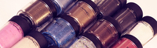
Hace tiempo publiqué una entrada sobre mis sombras de MAC y por lo que veo os gustó mucho y os sirvió de ayuda a las que no sabíais bien por dónde empezar para hacer vuestra paleta. En esta ocasión os hablo de los pigmentos y glitters, un de los productos estrella de MAC y que tanto me gustan por su versatilidad y pigmentación.
Actualmente podemos encontrar los pigmentos y glitters en los stand de MAC en El Corte Inglés, excepto algunos de sus tonos que están reservados para la línea Pro, y que sólo podemos encontrar en las tiendas MAC Pro de Madrid y Barcelona y tienen un precio de 22€ aproximadamente. Algunos de los tonos que tengo son ediciones limitadas y ya no se encuentran en las tiendas, aunque es bastante fácil encontrarlos por eBay.
Empecemos por entender qué es un pigmento y en qué se diferencia de una sombra de ojos corriente. La principal diferencia es que el pigmento es color puro, mientras que las sombras son más procesadas, aditivos como el talco o la mica son añadidas al pigmento para hacer las sombras compactas. El pigmento tiene una mayor intensidad y duración, además de poder utilizarse para diferentes usos al presentarse de forma suelta.
Una sombra de ojos en polvo no es lo mismo que un pigmento. Las sombras en polvo son eso, sombras corrientes trituradas, pero no es pigmento puro y por lo tanto ni tienen las mismas características ni los mismos usos.
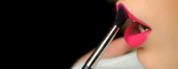
USOS
-
Sombra de ojos: El uso más común, dependiendo del acabado y la textura podemos conseguir desde una capa suave a un color súper opaco e intenso.
-
Labios: Mezclando el pigmento con bálsamo o gloss podemos personalizar nuestros propios tonos. Incluso podemos mezclar ambos pigmentos para conseguir un color único.
-
Uñas: Mezclando una pequeña cantidad con una laca de uñas transparente. Los glitters también pueden usarse de este modo.
-
Eyeliner: Mezclados con agua o con mixing medium y con ayuda de una brocha para delinear, los pigmentos ofrecen un color muy intenso para delinear y además duran muchísimo.
-
Máscara: Este uso es más común en maquillajes artísticos, pero podemos mezclar los pigmentos con una máscara de pestañas y conseguir desde un tono distinto hasta acentos de color en las puntas.
-
Colorete: Cualquier tono que nos guste como colorete, puede usarse como tal. Los mates quedan especialmente bien, y duran una barbaridad puestos. Puede usarse solo o mezclado con otros coloretes.
-
Bronzer: Del mismo modo que el colorete, cualquier tono bronceado nos puede servir como bronzer.
-
Iluminador: Los tonos beige y crema quedan preciosos como iluminador. El más famoso es el tono Vanilla, aunque a mi personalmente me gusta más el Naked, pero ambos quedan muy bonitos para este uso.
-
Cuerpo: Los tonos bronceados, crema o perlados pueden mezclarse con nuestra loción corporal para darle luminosidad a la piel.
Ya que se trata de pigmentos, no todos son seguros para la zona de los ojos. En la caja vienen siempre indicados los usos recomendados para cada tono. En general los tonos rojos o fucsias suelen recomendarse para la cara y el cuerpo y no para los ojos, ya que son pigmentos muy fuertes para la zona sensible del párpado. Aun así, no quiere decir que no puedan usarse, siempre se puede probar, pero deben advertir. Los tonos que tengan shimmer, igual que con los lápices o sombras de ojos, se sabe que no son seguras para la zona de la línea de agua, ya que las partículas brillantes pueden erosionar la córnea.
Lo más interesante de los pigmentos son las múltiples posibilidades de uso que ofrecen.
BROCHA RECOMENDADA
Personalmente, me encanta la brocha #242 de MAC para aplicar y presionar los pigmentos sobre el párpado. El pigmento se adhiere perfectamente. No tiene por qué ser esa brocha concretamente, puede ser de cualquier marca, pero recomiendo que tenga esa forma. También se puede humedecer para conseguir una mayor pigmentación del pigmento.
Podéis ver un review en Temptalia.
Y ahora paso a enseñaros los que yo tengo:
BLUE BROWN
Tiene un color parecidísimo a la sombra Club, por no decir igual, pero mucho más intenso.
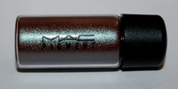
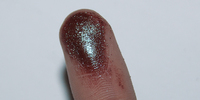
MADNESS MAGENTA
Los pigmentos mates neoes quedan genial mezclados con gloss, o como colorete, con mano ligera.
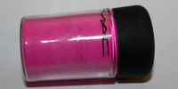
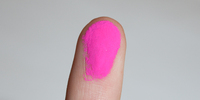
NEON ORANGE

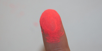
NAKED
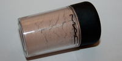
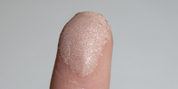
DEEP BLUE GREEN
Uno de mis favoritos
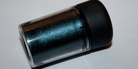
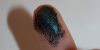
DEEP PURPLE
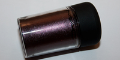
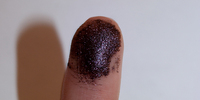
CORNFLOWER
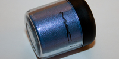
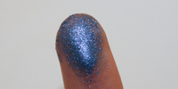
REFLECTS BLACKENED RED
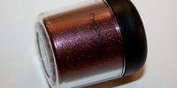
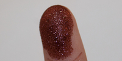
MUSEUM BRONZE (Edición Limitada)
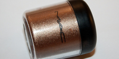
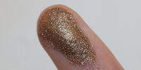
BRIGHT FUSCHIA
Este pigmento queda precioso como colorete
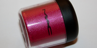
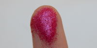
TAN


REFLECTS TRANSPARENT TEAL (PRO)
Este tipo de pigmentos tienen un reflejo duocromo que se varía según cómo le de la luz, y también de la base. Es preferible usarlos en húmedo.
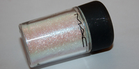
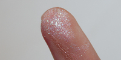
REFLECTS TRANSPARENT PINK (PRO)
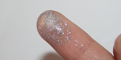
A simple vista parecen iguales, pero al ponerlos sobre una base cremosa cambian por completo
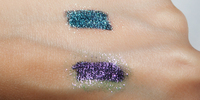
DARK SOUL
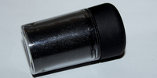
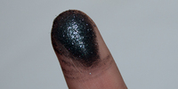
BLACK BLACK
Pigmento mate ultra negro. Si sois amantes de los ahumados necesitáis este pigmento, es negro negrísimo!
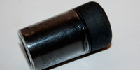
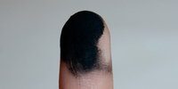
GRAPE
SILVER (PRO)
GLITTERS!
Con los glitters hay que tener especial cuidado al aplicarlos: acaban en todas partes. Es recomendable usar una base cremosa/grasa, se adhieren mucho mejor con diferencia, además de quedar más concentrado. Si no ponemos nada previamente en el párpado, seguramente vuelen. Podéis ver el glitter 3D Silver en acción en este vídeo.
3D GLITTER SILVER (PRO)
GOLD (PRO)
REFLECTS ANTIQUE GOLD (PRO)
Es muy fino, así que más que glitter yo diría que se acerca más a pigmento.
Y esto es todo! Espero que os haya servido de ayuda. Nos vemos pronto :)
Nars Holiday 2011
Wed, 05 Oct 2011 21:40:42 +0000
Como os comenté en la entrada anterior, además de poder ver maquillar a Uzo, nos presentaron la nueva colección para estas navidades: Holiday ’11 Collection. Esta colección se basa en sombras de ojos brillantes, oscuras y de colores intensos, mejillas con tonos clásicos y labios que representan el equilibrio entre tonos luminosos y mates. La [...]
Como os comenté en la entrada anterior, además de poder ver maquillar a Uzo, nos presentaron la nueva colección para estas navidades: Holiday ’11 Collection. Esta colección se basa en sombras de ojos brillantes, oscuras y de colores intensos, mejillas con tonos clásicos y labios que representan el equilibrio entre tonos luminosos y mates.
La colección estará a la venta a partir de Noviembre en los centros El Corte Inglés (Goya, Pozuelo, Princesa, Serrano y Preciados en Madrid. Diagonal en Barcelona, Puerto Banús en Marbella, Alicante y Pamplona), y en Sephora (Gran Vía en Madrid, Triangle, Rambla Cataluña y Diagonal Mar en Barcelona, Independencia en Zaragoza, San Sebastían y Salamanca).
La colección Holiday 2011 fue diseñada y fotografiada por el fundador y director creativo de Nars, François Nars. La modelo italiana Mariacarla Boscono es la elegida como imagen para reflejar esta colección, del mismo modo que protagonizó la colección de este otoño.
Para preparar el look de Mariacarla se utilizó:
Rostro
- Nars Pro-Prime Pore Refining Primer
- Nars Sheer Matte Foundation en Siberia
- Nars Loose Powder en el tono Snow
Mejillas
- Nars G Spot Multiple en la sien
- Nars Miss Liberty para definir las mejillas, extendiéndolo hacia la raíz del pelo y por el tabique nasal
Ojos
- Nars Zardoz Cream Eyeshadow como base, desde la raíz de las pestañas hasta la cuenca del ojo
- Nars Arabian Nights Trio Eyeshadow. Se utilizó la sombra oscura con matices bronces en todo el párpado móvil y a lo largo de las pestañas inferiores
- Nars Paris Duo Eyeshadow. La sombra plateada se aplicó en el arco de la ceja hasta fundirse con la sombra oscura del trío Arabian Nights
- Nars Eyelash Curler
- Nars Larger Than Life Mascara
- Se aclararon las cejas para conseguir un efecto moderno y dramático
Labios
- Nars Jungle Red Lipliner Pencil para delinear y rellenar los labios
- Nars Joyous Red Lipstick
ARABIAN NIGHTS TRIO EYESHADOW Edición Limitada
42.72€
Inspirada en la popular colección de cuentos del Medio Oriente, este trío de sombras en tonos negros profundos (negro brillante, negro perla púrpura y negro perla con toque rosáceo) proporcionan un look opulento y elegante. Se puede utilizar cada sombra por separado o experimentar con diferentes combinaciones para conseguir una mirada profunda y ahumada.
PONDEROSA SINGLE EYESHADOW Edición Limitada
24.41€
Los altos pinos indígenas de América del Norte sirvieron de inspiración a la hora de crear esta sombra de color marrón visón. Aplicar la sombra de ojos con la yema del dedo y extenderla abundantemente sobre el párpado para conseguir una mirada pura. Para conseguir un look con un mayor efecto saturado, añadir varias capas adicionales.
MANCHOURIE DUO EYESHADOW
34.59€
Este dúo de sombras que recibe el nombre de una región geográfica del noreste de Asia, se compone de un tono dorado inspirado en la tela vaquera y un tono azul marino intenso que proporciona un efecto ying yang. El tono más oscuro es perfecto para delinear o dar forma al ojo y el tono más claro para resaltar la mirada. El efecto que se consigue es un look de perfecto equilibrio.
CAMPO DE FIORI LARGER THAN LIFE LONG WEAR EYELINER
25.00€
La plaza romana que en su día fue un campo de flores inspira a éste lápiz de ojos de color oro viejo.
ST. MARKS PLACE LARGER THAN LIFE LONG WEAR EYELINER
25.00€
Éste lápiz de ojos está inspirado en la deslumbrante y vertiginosa calle del East Village de Nueva York.
MISS LIBERTY BLUSH
30.52€
Este tono melocotón suave aporta un brillo instantáneo a cualquier rostro. Se puede lucir individualmente o sobre otros tonos de colorete para lograr un efecto de relieve y de definición.
G-SPOT MULTIPLE
41.71€
El tono dorado intenso de este múltiple realza los pómulos y otras partes del rostro. Calentar el Multiple con la mano y aplicarlo sobre las mejillas para conseguir un cutis con un toque sexy y sofisticado.

ALBATROSS LIP GLOSS
25.43€
Este brillo de labios que tiene el mismo nombre que el iluminador de Nars Albatross, aporta un increíble destello a los labios. Además, es perfecto para aplicar sobre otros productos labiales.
JOYOUS RED LIPSTICK
25.43€
Barra de labios rojo ámbar.
ENDLESS NIGHT & SPACE ODYSSEY NAIL POLISH Edición Limitada
19.33€
Endless Night, esmalte con color uva negra, es tan profundo y oscuro como larga es la noche.
Space Odyssey, llamado así por la serie de novelas y películas de ciencia ficción escritas principalmente por Arthur C. Clarke. Laca de uñas metálica de color aluminio.
Y ahora os enseño algunas fotos que pude sacar en el evento. Disculpad la iluminación, pero no puede hacer nada más!
Aunque pueda parecer que sí en la foto, el shimmer no es tan grueso, es un efecto de las luces. Para que os hagáis una idea, es bastante similar a las sombras de la serie Night. Pigmentan bien, pero el efecto una vez aplicado no es como en el envase, se trata básicamente de tres sombras negras, cada una con matices diferentes.
El morado no se aprecia muy bien pero es un morado vino muy bonito. El plateado pienso que está pensando como top coat porque no cubre demasiado.
Esta es la sombra en crema. Me encantó, me la compraré seguro, pigmenta bastante de una pasada y el color es muy intenso.
Uzo comentó que le gustaba utilizarlo sobre los múltiples especialmente, por sí solo sólo deja el brillo, pero aplicado sobre un producto en crema u otro colorete mate, deja un aspecto como húmedo. No es como el iluminador que salió en verano, es mucho más fino.
Ambas sombras pigmentan y se trabajan muy bien. La mate no es nada tizosa, es muy sedosa y no se pierde al difuminarla.
G-Spot (punto G), creo que es el nombre que faltaba después de Orgasm o Deep Throat :P Es un color rosa profundo, da un aspecto muy saludable y el shimmer es muy finito, no noté que marcase el poro. Es el que lleva la modelo en las fotos del post anterior.
No es rojo pero tampoco es naranja… en la descripción viene definido perfectamente: rojo ámbar. Queda muy elegante.
El gloss Albatross es transparente, pero tiene un shimmer muy finito de color dorado. Queda muy bonito solo pero especialmente bien sobre otros labiales.
Nos enseñaron unos productos muy especiales que van a salir junto a esta colección, pero que no pudimos fotografiar porque se publicará en exclusiva en la web americana el día 15. Sólo puedo deciros que si os gusta la marca, se trata de unos productos de coleccionista, preciosos…
Illamasqua Skin Base Competition
Mon, 21 Nov 2011 12:32:13 +0000
¡Buenas! Hoy os traigo algo súper interesante que tenía muchas ganas de compartir con vosotros, se trata de un concurso organizado nada más y nada menos que por Illamasqua, con motivo del reciente lanzamiento de su base de maquillaje Skin Base Foundation. Si queréis conocer un poco más la firma, podéis encontrar el resto de entradas [...]
¡Buenas! Hoy os traigo algo súper interesante que tenía muchas ganas de compartir con vosotros, se trata de un concurso organizado nada más y nada menos que por Illamasqua, con motivo del reciente lanzamiento de su base de maquillaje Skin Base Foundation. Si queréis conocer un poco más la firma, podéis encontrar el resto de entradas dedicadas a Illamasqua aquí.
Si queréis saber cómo participar y qué podéis ganar, os lo dejo todo a continuación. ¡Suerte!
SKIN BASE FOUNDATION
Esta base se inspiró en los Beauty Balm (BB Creams) del mercado asiático, que son conocidos por perfeccionar la apariencia de la piel al mismo tiempo que la tratan. No quiere decir que esta base sea una BB Cream, no lo es. Illamasqua ha creado esta base de maquillaje inspirándose en el efecto que ofrecen las BB Creams, que no es otro que la apariencia de una piel sana y perfecta, al mismo tiempo que ofrece un acabo natural y fresco.
Esta base se trabaja muy fácil en la piel, pero hay que tener en cuenta que es muy pigmentada, por lo que una mínima cantidad es necesaria para todo el rostro. Si aplicamos la cantidad que usaríamos con cualquier otra base, vamos a conseguir un efecto demasiado recargado, hay que tener mucho cuidado con eso. Aplicando la cantidad justa es como más partido se le saca a esta base. Otro punto a favor de esta base es que fotografía muy bien, no contiene SPF y no deja aspecto blanquecino ni anti natural.
Si bien está indicada para todo tipo de pieles, pienso que en una piel seca se puede echar un poco de menos la hidratación por su ligero acabado semi mate. En ese caso habría que tener en cuenta el uso de primers y una buena preparación e hidratación previa.
Esta base se puede encontrar en 18 tonos, desde el blanco hasta el más oscuro, por lo que hay un tono para todo el mundo.
El tono que he usado para las fotografías es el SB 06. Para que sirva de referencia, actualmente uso el tono C2 de la F&B de MAC. De todos modos, si tenéis dudas sobre vuestro tono, Illamasqua ha creado una tabla de equivalencias con bases de MAC, Bobbi Brown o Chanel entre otras. Podéis consultarla aquí. He aplicado la base con la brocha F82 de Sigma.
Para darle un poco más de dimensión al rostro he utilizado la paleta Bronzing Duo en el tono Glint & Burnish, que es el más claro de los dos que ofrecen. La parte clara puede utilizarse de iluminador o incluso de colorete según el tono de piel. Yo lo he utilizado como iluminador. La parte oscura hace la función de bronzer.
La paleta viene con un espejo interior bastante grande, y como todo el packaging de Illamasqua, sigue una linea elegante y sencilla.
CONCURSO
Y bien, ¡ahora viene la parte interesante! Y es que podéis ganar los productos que he utilizado en esta entrada totalmente gratis, la base Skin Base Foundation tamaño de venta (30ml) en vuestro tono, la paleta Bronzing Duo en el tono Glint & Burnish y el iluminador Illuminator en el tono Halcyon. Para ello sólo tenéis que seguir este enlace y contestar una pregunta súper sencilla. ¡Os deseo muchísima suerte!
Enlace a la página del concurso: http://www.illamasqua.com/makeupzone
- El concurso finaliza el 27 de Noviembre a las 11.59 pm
- El ganador será elegido y nombrado aleatoriamente el día 28 de Noviembre
- El concurso es internacional
Quiero dar las gracias a Illamasqua por contar conmigo para esta ocasión, es una marca que sabéis que me encanta, y estoy súper contenta de poder ofreceros este sorteo tan interesante! :)
Dramatic Eyeliner
Mon, 07 Nov 2011 13:12:01 +0000
¡Buenas! Este look no lo tenía planeado, tampoco sabía cómo llamarlo. Realmente estaba probando unos pinceles nuevos de eyeliner, y cuando lo acabé en un ojo me dio pena desecharlo. He usado el Chromaline de MAC (PRO) en negro, el cual ya me encantaba pero me ha terminado de enamorar al ver lo fácil que es [...]
¡Buenas! Este look no lo tenía planeado, tampoco sabía cómo llamarlo. Realmente estaba probando unos pinceles nuevos de eyeliner, y cuando lo acabé en un ojo me dio pena desecharlo. He usado el Chromaline de MAC (PRO) en negro, el cual ya me encantaba pero me ha terminado de enamorar al ver lo fácil que es “dibujar” en el párpado con él. Dentro de poco haré una entrada sobre este producto, que me lo habéis pedido un montón.
Este tipo de delineado con aire sesentero se ha visto bastante en las semanas de la moda de este año, aun más exagerado. Obviamente no es para ir a cenar (o sí :P), pero es divertido y una buena práctica si queréis mejorar la técnica de delinear.
He utilizado un pincel de Louise Young, el LY08. Es un pincel que se vende para “detalle” e indican que es excelente para el corrector en la zona del ojo, pero a mi me ha parecido estupendo para delinear, al ser corto y fino tienes más control sobre el trazo, y permite hacer lineas desde muy finas hasta más gruesas como veis en las fotos.

Para este tipo de delineados es recomendable usar delineador líquido, ya sea al agua, líquido o en gel. Personalmente prefiero el gel, se desliza más fácil y se pueden corregir errores fácilmente en el momento con ayuda de un bastoncillo y un poco de desmaquillante (importante que no sea oleoso o echaremos todo a perder).
Como este look es sólo sobre el eyeliner, os pongo las que subí a Instagram, que me gustó cómo quedaron con el filtro :) Le dan un toque más antiguo que creo que le va al look.
En la piel llevo la base Sheer Glow de NARS, mezclé el tono Fiji con un poco del Barcelona, porque no tengo ahora mismo el tono intermedio, pero sería muy similar a Punjab. Sellé la base con los Loose Powder de Nars en el tono Beach. Como corrector el Double Wear Concelaler de Esteé Lauder en el tono Light Medium.
El colorete es el Shadore de Kevyn Aucoin, aunque por el filtro no se aprecie, y puse en los pómulos un poco del Shimmer Brick de Bobbi Brown en el tono Pink. En los labios llevo el labial Speed Dial de MAC. En las pestañas utilicé la máscara Shocking de YSL. El Chromaline lo utilicé tanto para delinear como para maquillar la linea de agua superior e inferior. Las cejas las maquillé con el kit de cejas de Catrice, que descubrí hace no mucho y me encanta.
Quería aprovechar esta entrada para daros las gracias por hacerme finalista en los Premios Bitácoras 2011 en la categoría de belleza. Me hace muchísima ilusión ya que son votos vuestros, de quienes me leéis, es un reconocimiento enorme y de verdad, mil gracias. Gane o no, es de lo de menos, para mi esto ya es el premio más grande :)
NARS Modern Kabuki Collection
Thu, 27 Oct 2011 10:00:28 +0000
¡Buenos días! Como os comenté, en el evento de Nars al que asistí el mes pasado, además de presentarnos la colección Holiday ’11 de estas navidades, pudimos ver una colección muy especial que saldrá a la venta estas fiestas. Se trata de la colección Modern Kabuki y advierto que si sois fans de la firma [...]
¡Buenos días! Como os comenté, en el evento de Nars al que asistí el mes pasado, además de presentarnos la colección Holiday ’11 de estas navidades, pudimos ver una colección muy especial que saldrá a la venta estas fiestas. Se trata de la colección Modern Kabuki y advierto que si sois fans de la firma os va a encantar. François Nars es un amante de la cultura nipona, y su fascinación por el maquillaje artístico del teatro Kabuki, le han inspirado para crear esta colección.
La colección estará disponible a partir de Noviembre en centros El Corte Inglés y Sephora. Si os gusta algo yo iría reservando en vuestro stand más cercano, porque preveo que va a durar un suspiro.
En primer lugar os quiero enseñar el visual de la colección, que personalmente me parece precioso. El dato curioso es que la chica no es una modelo, si no la asistente de François Nars. François pensó que encajaba con la imagen que quería transmitir para esta colección.
HANAMICHI KABUKI-INSPIRED EYESHADOW PALETTE
(Paleta de sombras de ojos)
55.00€
Esta paleta es para mi la estrella de esta colección, me encantó cuando la vi y me enamoré de la mini kabuki de ojos. Además, los combinación de los tonos me pareció muy acertada. Podéis ver un negro, granate, dorado y el blanco roto satinado que nos puede servir como iluminador. “Hanamichi” significa “sendero de flores” en japonés. Se trata del famoso pasillo de los teatros Kabuki que une a los actores con el público y que ha servido de inspiración para crear esta paleta de sombras de ojos con un diseño exclusivo. La paleta viene acompañada por un pequeño pincel y cubierta por un envoltorio típico japonés.
En persona es mucho más bonita de lo que se puede ver en la foto. El tamaño de la paleta es como el del bronzer Laguna/Casino.
MIE KABUKI MINI SOFT TOUCH SHADOW PENCIL COFFRET
(Set de sombras en lápiz)
45.00€
Ésta colección de seis mini lápices “Soft Touch Shadow Pencil” de edición limitada, reúne las tonalidades más deseadas de estas cremosas sombras. El “Mie Kabuki”, actuación dramática de gran emoción, sirvió de inspiración para crear éstos lápices de larga duración que permiten conseguir un look teatral con unos trazos fáciles y rápidos.
Tonos:
- Aigle Noir: Negro con partículas doradas brillantes
- Tall Tale: Púrpura metálico oscuro (Novedad)
- Magic Moon: Azul metálico profundo (Novedad)
- Palladium: Turquesa con toques plateados brillantes (Si os lo perdisteis hace dos temporadas, podéis volverlo a comprar en esta colección)
- Skorpios: Cobre
- Ballets Russes: Plateado (Novedad)
KUROKO KABUKI MINI NAIL POLISH COFFRET
(Set de lacas de uñas)
30.00€
Este mini juego de lacas de uñas incluye colores oscuros y vivos que representan las tonalidades utilizadas tradicionalmente en el teatro Kabuki.

Tonos:
- Yoshiwara: Rojo
- Shiro-Nuri: Blanco
- Kata: Negro
- Senryou: Dorado
Y ahora viene la mala noticia! Este precioso set de brochas Kabuki sólo se venderá en los stands de Estados Unidos, pero podéis comprarla en la web europea en este enlace. El precio es de 225$ (200€ en Europa). Teniendo en cuenta lo que cuestan las brochas por separado, (tan sólo tres de ellas, Yachiyo, ITA y Botan, salen por unos 200€) me parece una oportunidad estupenda para hacerse con las mejores brochas de la marca, que además, incluye dos ediciones limitadas de ojos y labios.
Otro de los productos que serán de venta exclusiva en los stands de Estados Unidos pero que podemos comprar en la web europea aquí.
NARS Kudoki Kabuki Lip Set
$125
NARS captura el drama y la belleza de los labios kabuki en este set, llamado así por la femenina danza del teatro kabuki. Takebue, Ougi y Botan, tres tonos intensos, están acompañados por una brocha de labios hilada a mano. Como curiosidad, me comentaron que Shiseido manufactura estos sets de labios inspirados en el maquillaje tradicional del teatro kabuki para las geishas que quedan actualmente, de forma exclusiva, no están disponibles a la venta.
¿Qué os ha parecido?
MAC Fall Colour Collection
Fri, 07 Oct 2011 16:23:57 +0000
¡Buenas! Hoy os traigo información sobre otra de las colecciones de MAC para este otoño. Esta colección se llamó en un principio “Cindy Sherman“, pero finalmente se le cambió el nombre por “Fall Colour“, ya que la implicación de Cindy Sherman en esta colección fue únicamente hacer las fotografías. Cindy Sherman es una fotógrafa americana [...]
¡Buenas! Hoy os traigo información sobre otra de las colecciones de MAC para este otoño. Esta colección se llamó en un principio “Cindy Sherman“, pero finalmente se le cambió el nombre por “Fall Colour“, ya que la implicación de Cindy Sherman en esta colección fue únicamente hacer las fotografías.
Cindy Sherman es una fotógrafa americana conocida por sus retratos conceptuales, y por esa forma de retratar estereotipos femeninos, rozando el ridículo. Para los que conozcan a esta artista no se sorprenderán de las fotografías de esta campaña, para los que no, puede resultar un poco impactante.
A continuación os muestro las imágenes promocionales y algunos de los productos que he podido probar. Esta colección salió a la venta ayer, 6 de Octubre, y está a la venta de forma limitada.
zoom
zoom
zoom
Fluidline
-
Ash Violet Blackened purple (Edición Limitada)
-
Blacktrack Solid flat black
Lipstick
-
Fleshpot Pale muted pinky beige (Satin) (Permanente en tiendas PRO)
-
Violetta Bright clean violet purple (Amplified) (Permanente en tiendas PRO)
-
X-S Dirty red chestnut (Satin) (Permanente)
-
Plum Bright Purple (Satin) (Edición Limitada)
-
Neon Orange Bright clean orange (Amplified) (Permanente en tiendas PRO)
-
Show Orchid Vivid hot pink (Amplified) (Permanente en tiendas PRO)
-
Fusion Pink Bright coral (Amplified) (Permanente en tiendas PRO)
-
Ruby Woo Vivid bluish-red (Matte) (Permanente)
Lip Erase
-
Dim (Permanente en tiendas PRO)
Pigment
-
Tan (Permanente)
-
Emerald Dusk (Edición Limitada)
-
Blue Storm (Edición Limitada)
-
Starless Night (Edición Limitada)
-
Neo-Orange (Matte) (Permanente en tiendas PRO)
-
Magenta Madness (Matte) (Permanente en tiendas PRO)
-
Violet (Frost) (Permanente)
-
Golden Olive (Frost) (Permanente)
Lash
Parlor Smoke Eyeshadow Quad
-
Parlor Smoke (Frost) (Edición Limitada)
-
Cross Cultural (Matte) (Edición Limitada)
-
Steel (Veluxe Pearl) (Edición Limitada)
-
Indigo (Matte) (Edición Limitada)
Bronzing Powder
-
Solar Riche (Edición Limitada)
Nail Lacquer
-
Coco Clay (Edición Limitada)
-
Oyster Shell (Edición Limitada)
Kohl Power
-
Feline Rich black (Edición Limitada)
Eyeshadow
-
Three Ring Yellow (Veluxe Pearl) (Edición Limitada)
-
Passionate (Matte) (Permanente)
-
Blue Candy (Satin) (Edición Limitada)
-
Shock-a-holic (Satin) (Edición Limitada)
-
Royale (Matte) (Edición Limitada)
Chromagraphic Pencil
-
Process Magenta (Permanente en tiendas PRO)
-
Basic Red (Permanente en tiendas PRO)
-
Hi-Def Cyan (Permanente en tiendas PRO)
-
Rich Purple Permanente en tiendas PRO)
Mineralize Skinfinish
-
Lightscapade (Edición Limitada)
-
Porcelain Pink (Edición Limitada)
Jumbo Penultimate Eyeliner
-
Rapidblack True black (Edición Limitada) (Permanent en tamaño pequeño)
Lipglass
-
C-Thru (Permanente)
-
Pink Fade (Edición Limitada)
-
Orange Tempera (Edición Limitada)
-
Good Times (Edición Limitada)
Angel Flame Quad
-
Chamomile (Satin) (Edición Limitada)
-
Feather Pink (Satin) (Edición Limitada)
-
Angel Flame (Frost) (Edición Limitada)
-
Gravel (Matte) (Edición Limitada)
MINERALIZE SKINFINISH “LIGHTSCAPADE”
Este MSF queda en la piel con un efecto perlado, tirando al plata. Lo recomiendo para pieles claras, pero no para las morenas porque podría quedar un poco gris.
ANGEL FLAME
Chamomile/Angel Flame/Feather Pink/Gravel
La primera sombra, Chamomile, ya salió de forma individual con la colección del pasado año Warm & Cozy, es una mezcla entre Brulé y Vanilla. La segunda, Angel Flame, me recuerda bastante a la sombra Expensive Pink de la línea permanente. La sombra rosa pastel y la gris oscura son bastante clonables. Si tenéis sombras parecidas no me parece una paleta imprescindible.
VIOLETTA & FUSION PINK LIPSTICKS
Para mi, junto los pigmentos, esto es lo más interesante de la colección. Ambos son PRO, por lo que las que como yo no tengáis una tienda MAC Pro cerca, es una buena ocasión para aprovechar y hacerse con ellos. El Violetta es un tono muy especial y bastante difícil de encontrar en otras marcas. Fusion Pink es un tono muy singular también, es una mezcla entre rojo, rosa y coral.
CHROMAGRAPHIC PENCILS ‘RICH PURPLE’ & HIGH DEF CYAN’
Los Chromagraphic Pencils son unos lápices permanentes en las tiendas Pro, son multiusos, se pueden utilizar en rostro, ojos, labios y cuerpo y son muy pigmentados y cremosos. Rich Purple puede servir de perfilador para labiales berenjenas oscuros, y también queda genial por si solo con gloss encima, o como eyeliner. High Def Cian lo veo más como base para sombras azules y como delineador para las que os gusten los maquillajes más atrevidos y vistosos. No todos los tonos son seguros para la zona del ojo, así que antes de comprarlo consultadlo en vuestro stand.
ROYALE & SHOCK-A-HOLIC EYESHADOWS
Los colores me han gustado, pero no me ha parecido que pigmentasen muy bien, hay que aplicar varias capas para conseguir que queden uniformes, y con prebase cremosa, con el párpado desnudo no se adhieren muy bien, por lo que no son las ideales para hacer ahumados, pero sí para definir.
TAN & PROCESS MAGENTA PIGMENTS

Ambos los podéis encontrar en el stand, estos ya los tenía y son de los que más me gustan. El Process Magenta asusta un poco, pero lo cierto es que queda muy bonito mezclado con gloss, también se puede usar de colorete, o sobre otro labial para dar un efecto más neón y aterciopelado, como se vio en las pasadas pasarelas de Jil Sander. estos son los usos que yo le doy. El Tan es muy ponible, yo me lo suelo poner en todo el párpado móvil, o en el centro del párpado cuando hago un ahumado. En pieles muy morenas queda también muy bonito como iluminador, es muy reflectante.
En definitiva, lo mejor de la colección me parecen los labiales, los Chromagraphic y los pigmentos. Es una oportunidad para comprar en el stand productos Pro.
Evento de NARS con Uzo
Tue, 04 Oct 2011 20:12:43 +0000
Hace unos días recibí una invitación que me hizo muchísima ilusión, y que no dudé ni un segundo en aceptar! NARS me daba la oportunidad, junto a otras chicas, de asistir a un evento privado para bloggers. En dicho evento nos iban a presentar la colección de estas navidades, y lo mejor de todo: tendríamos [...]
Hace unos días recibí una invitación que me hizo muchísima ilusión, y que no dudé ni un segundo en aceptar! NARS me daba la oportunidad, junto a otras chicas, de asistir a un evento privado para bloggers. En dicho evento nos iban a presentar la colección de estas navidades, y lo mejor de todo: tendríamos la oportunidad de conocer y ver maquillar a Uzo, maquilladora internacional de la firma.
Fue un día genial, lo disfruté muchísimo. Pude conocer al equipo de Nars y del grupo Shiseido, que fueron muy amables con nosotras y muy atentas en todo momento. A continuación os cuento la experiencia con Uzo, junto el maquillaje que hizo paso a paso. En la siguiente entrada os enseñaré la colección Holiday 2011 para estas Navidades.
El evento tuvo lugar en Fuencarral, en Madrid. El sitio elegido fue DommoKitchen. Habían preparado el espacio para la demostración de Uzo y la presentación de la nueva colección.
El catering, delicioso.
Al llegar nos presentaron los nuevos productos para la colección Holiday 2011, de la cual os hablaré más adelante en detalle, y después nos presentaron a Uzo.
Quiero introduciros un poco acerca de ella porque lo merece. Uzo es una de las maquilladoras internacionales de la firma Nars. Ha participado en las semanas de la moda de Nueva York, Los Angeles y Londres, donde ha diseñado looks para diseñadores de la talla de Christian Dior y Roberto Cavalli, entre otros. También ha sido miembro del grupo creativo de los shows de Marc Jacobs, Diane Von Furstenberg, Donna Karan, Rodarte, Carolina Herrera, entre muchos más.
Es una maquilladora muy demandada y con gran prestigio en Estados Unidos, teniendo clientes como Naomi Campbell, Drew Barrymore, Marcia Cross, y muchas celebrities más.
Verla maquillar y escucharla fue una experiencia muy enriquecedora. Me encanta ver trabajar a otros profesionales, porque siempre aprendes algo nuevo y conoces técnicas diferentes. Es esa clase de persona que notas que ama su trabajo y lo demuestra en cada gesto. Pese a su extensa experiencia y estatus, me pareció muy humilde, agradable y con los pies en la tierra. Pude preguntarle todo lo que quise (quizá demasiado, pero tenía que aprovechar!), y tengo que agradecer el trato personal que me dio y cómo atendió cada una de mis dudas, así como la conversación que tuve con ella al despedirme. Fue surrealista tenerla delante, cuando siempre la he visto en fotos de desfiles y demás, sin duda fue lo mejor del evento y no lo voy a olvidar, la oportunidad de conocer a un profesional de su talla no se tiene todos los días.
Uzo hizo una demostración de maquillaje usando los productos de la colección que nos llega para estas Navidades.
Como primer paso, aplicó Brightening Serum en todo el rostro. Explicó que le encantaba porque dejaba la piel radiante e hidratada. Ya os he hablado de este producto antes, funciona excelente en pieles apagadas o cetrinas, ya que tiene un pigmento rosado que aporta luz y reaviva el tono.
Seguidamente aplicó el múltiple Maldives en los puntos altos del rostro. Comentó que ella prefería aplicarlo después de la hidratante y antes de la base, porque la piel relucía de una forma más natural, al fundirse con el producto que apliquemos posteriormente.
El siguiente paso fue corregir el tono y esculpir el rostro. Lo hizo con dos tonos diferentes de los nuevos correctores, uno más claro para iluminar y otro más oscuro para definir. Explicó que prefería corregir antes el rostro e unificar el tono con ayuda de correctores, ya que la aplicación es mucho más ligera y en ocasiones podemos prescindir de la base, sobre todo cuando tenemos poco tiempo.

A continuación aplicó una capa ligerísima de la base Sheer Glow en el centro del rostro, para acabar de perfeccionar la piel.
A continuación aplicó el múltiple G Spot (nuevo para estas navidades) en el centro de las mejillas y lo fundió con la base. Este paso dio un aspecto sonrojado muy natural y fresco a las mejillas. Después de una capa ligera de polvo suelto para fijar el maquillaje, aplicó el nuevo colorete iluminador, Miss Liberty, sobre el múltiple y hacia la sien. Éste producto no me llamó mucho la atención en un principio, pero una vez aplicado en la modelo quedaba increíblemente bonito, daba un aspecto mojado que además comentó que era tendencia para la próxima temporada, una piel más hidratada, iluminada y con más dimensión, dejando atrás las pieles mates y apagadas que hemos visto temporadas atrás.
En los ojos, aplicó la sombra en crema Ponderosa (nueva para estas navidades), un marrón oscuro con shimmer dorado preciosa. Me recordó al tono de la galápagos pero más marrón y menos dorada. A continuación aplicó la parte brillante del duo Mandchourie (nuevo para estas navidades), un verde azulado con shimmer que recuerda mucho al tono jean.
Después delineó las pestañas superiores con el lápiz Langer Than Life en el tono Marks Place (nuevo para estas navidades), y lo difuminó.
En la parte inferior utilizó otro lápiz Larger Than Life, en el tono Campo di Fiori (nuevo para estas navidades) , un oro viejo que aportó mucha luz al maquillaje. Para definir las cejas utilizó una sombra en crema marrón oscura, explicó que le resultaba más fácil hacer el trazo y que quedaba más natural que con lápiz.
Aplicó las dos máscaras de pestañas Larger Than Life, la Volumizing Mascara en la base, para aportar espesor en la raíz, y la Lengthening Mascara para alargar y definir.
Para finalizar, con las yemas de los dedos manchó ligeramente los labios con el múltiple G-Spot, y después aplicó el lipgloss Albatross (nuevo para estas navidades).
El resultado fue un maquillaje elegante y sofisticado, perfecto para estas fiestas y al mismo tiempo fresco y natural.
Después de sacar todas las fotos que necesitaba y hablar con el equipo y las asistentes, me despedí de ella y de Jane, formadora de la firma, que también asistió y amablemente se hicieron una foto conmigo :)
Curiosidades:
- Uzo nos comentó que corría el rumor de que Jennifer Lopez usaba el múltiple Copacabana, pero que en realidad el que usa es el Maldives, a veces incluso con South Beach y Copacabana, previamente cortado y mezclado.
- Su sombra preferida es Daphne. Le pregunté por qué esta sombra es tan complicada de trabajar, resultaba un poco tizosa y quería saber cómo sacarle el máximo partido. Me explicó que para conseguir ese color tan único, el pigmento está muy poco procesado y por ello no tiene la suavidad que el resto de sombras, que llevan más mezcla de pigmentos e ingredientes. Comentó que es un tono muy difícil de encontrar en otra marca y es precisamente por el modo en que está elaborada, y que es una sombra para la gente que realmente es seguidora de la firma, porque no es la más fácil de trabajar, pero sí es única. Me dijo que le gustaba mucho aplicarla sombre la parte brillante del duo Jolie Poupe, o sobre base en crema blanca, para conseguir la máxima intensidad. La prefiere para delinear pero no es su preferida para difuminar, aunque con técnica se puede usar para ahumados sin problemas.
- Le pregunté por la sombra Strada, es una sombra que me encanta y que no consigo trabajar del todo bien. Al aplicarla en el párpado pierde el brillo, y quería saber cómo conseguir un efecto lo más parecido posible al que vemos en el envase. Me dijo que mezclase una sombra dorada y morada en crema y la utilizase como base, esto haría que al aplicar Strada encima no se pierda el reflejo dorado y tampoco su base morada. Lo probé en la mano y efectivamente quedaba precioso, no puedo esperar a probarlo!
- También le pregunté sobre la forma correcta de utilizar la Yachiyo, ya que había leído que debía usarse el lateral y no la punta. Me dijo que no hay normas, que puede usarse de todas las maneras, pero que lo más práctico era usar el lateral ya que cogías más superficie al aplicar el producto. Podía usarse con la punta pero eso era más práctico para contornear, y esa brocha al aplicar el producto tan ligero no es la más indicada para ello, que en ese caso era mejor utilizar una más firme. También me dijo que usar la punta estropearía el pelo a la larga.
- Le pregunté acerca de los nuevos correctores, había leído que estaban reformulados, pero también que no era cierto y que sólo cambiaba el envase. Quise saber qué diferencias notaba ella.
Me dijo que la fórmula es la misma, pero que para el nuevo envase han querido hacer la barra más fina, y para ello en la formulación se habían usado menos ceras y más pigmento, por lo que resultaba más cremoso y se movía menos. Me prometió que me encantarían y notaría la diferencia, y que además habían incluido muchos tonos nuevos, dando así la posibilidad de usarlos en el rostro como ella había hecho en la demostración.
¡Y esto es todo! Espero que os haya gustado esta entrada, yo lo disfruté como una niña y estoy deseando repetir, y a poder ser, volver a coincidir con ella :)